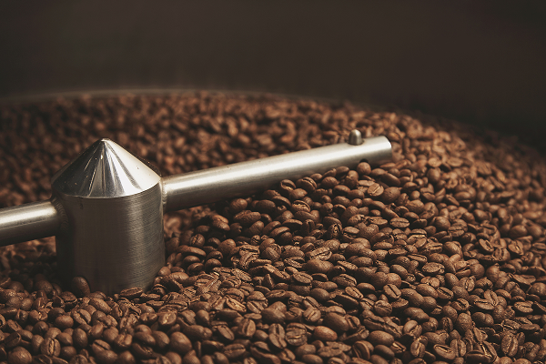
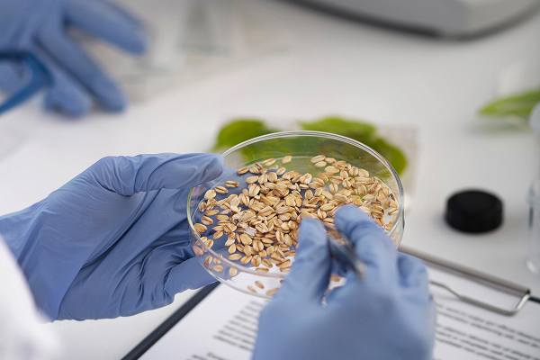
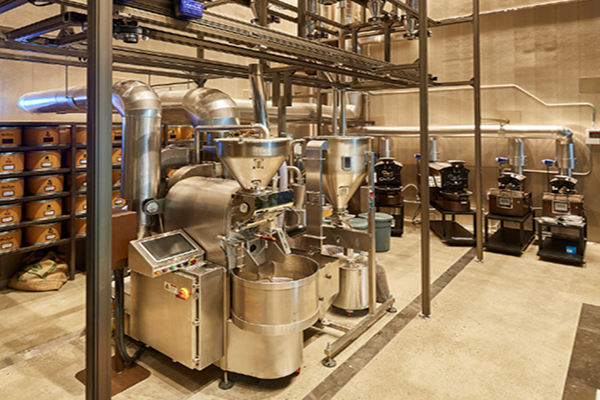

home > 회사소개 > 부분역량
부분역량
Partial competency
-

- 제품기획
- 동서식품은 내일을 생각합니다.
- 동서식품은 언제나 최고의 제품만을 고집하여 생활의 여유와 즐거움을 주는 커피문화, 생활문화를 이끌어 왔습니다. 소비자가 원하는 맛과 제품 성향을 빠르고 정확하게 진단하여 늘 새로운 아이템을 개발하고 있습니다.
-

- 연구개발
- 동서식품은 멈추지 않습니다.
- 맛과 향에 있어서 최고의 노하우를 가진 숙련된 연구원들이 기술연구소에서는 지금 이 순간에도 더 나은 제품을 위한 연구원들의 손길이 멈추지 않고 있습니다.
-

- 최신설비
- 모든 생산설비의 현대화와 자동화를 실현합니다.
- 다년간 축적된 기술 노하우와 초고속 포장설비, 최첨단 생산관리 자동화 시스템 등을 기반으로 원료와 완제품을 완벽하게 관리함으로써 위생적이고 안전한 제품들을 생산하고 있습니다.
-
- 유통
- 신속 정확 안전하게 제품을 전달합니다.
- 동서식품은 소비자에게 신속ㆍ정확ㆍ안전하게 제품을 전달하기 위하여 물류체계를 일찍부터 개선시켜 왔습니다. 또한 현시점의 물류 흐름을 총체적으로 파악할 수 있는 체계를 지속적으로 도입하고 있습니다.
-
- 직원의 정성
- 동서식품은 작은 것을 소중히 여깁니다.
- 동서식품이 만들어내는 하나 하나의 제품에는 동서의 마음이 담겨 있습니다. 가족이 안심하고 먹고 마실 수 있는 제품을 만든다는 생각으로 동서 사람들은 자신이 맡은 단계에서 꼼꼼하고 섬세한 품질 관리에 최선을 다합니다.
-
- 소비자 서비스
- 동서식품은 향기롭습니다
- 장학사업, 문화·문학 활동, 불우이웃돕기, 장병 위문 등 다양한 사회공헌을 통해 기업의 사회적 책임을 실천하고 있습니다. 동서식품은 기업으로서 사회적 책임을 다하기 위해 노력하고 있습니다.
-
- 환경보존
- 동서식품은 내일을 생각합니다
-
날로 심해지는 환경문제에 대응하는 것, 그것이 동서식품의 신념입니다.
1993년부터 '맑고 깨끗한 물, 우리가 지킨다'는 슬로건 아래, 전 공장에 자동폐수처리장을 설치하고 최점단 자동화 시설을 도입해 모범적인 환경경영을 실천하고 있습니다.